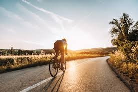

Un deporte de resistencia
El ciclismo requiere gran resistencia física y mental. Se practica tanto en ruta como en montaña y tiene competiciones como el Tour de Francia.
El ciclismo requiere gran resistencia física y mental. Se practica tanto en ruta como en montaña y tiene competiciones como el Tour de Francia.